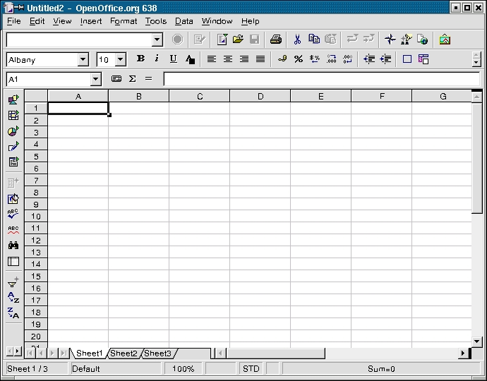
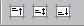

Cum sa realizati calcule simple
si
cum sa formatati celulele si paginile intr-un document.
furnizat de
Proiectul de Documentatie OpenOffice.org
Continut :
- Scurta introducere. Introducerea uneltelor disponibile in mediul de lucru OpenOffice.org Calc
- Calcule initiale.
- Formatare personalizata
- Tiparirea muncii dvs.
- Merite
1. Scurta introducere. Introducerea uneltelor disponibile in mediul de lucru OpenOffice.org Calc
Inainte de a incepe sa faceti aceste foarte avansate calcule, pe care fara indoiala ca le veti descifra, haideti sa aruncam o scurta privire de jur imprejurul dvs. pentru a va familiariza cu uneltele care sunt disponibile.

Imediat sub bara titlu (cea cu logo fluture) veti vedea patru bare de comanda:
- Bara de meniuri
- Bara de functii
- Bara de obiecte
- Bara de calcul
Bara de meniuri contine principalele meniuri ale modulului Calc. Bara de functii furnizeaza accesul utilizatorilor la butoanele de functii precum Open (Deschide), Save (Salveaza), Copy (Copiaza), Cut (Decupeaza in memorie), Paste (Alipeste din memorie) si alte sarcini comune in OpenOffice.org. Bara de obiecte include o serie de functii care sunt specifice calculelor si formatarii celulelor (stilul numarului, alinierea textului, marginile). In sfarsit, Bara de calcul este locul unde puteti introduce orice formula necesara calculelor dvs., si de asemenea, va arata pozitia cursorului in cadrul paginii de calcul.
Indicatie: Unele persoane considera ca aceste meniuri nu pot fi schimbate, dar nu este absolut adevarat. De fapt, este posibil sa schimbam atat butoanele de comanda, cat si functiile asociate, in concordanta cu nevoile dvs., dand click-dreapta mouse oriunde pe Bara de meniuri sau pe Bara de obiecte. Va fi afisat un meniu contextual. In continuare, alegeti 'Configure' (Configureaza) sau `Customize' (Particularizeaza) pentru a schimba continutul acestor meniuri. Puteti sa selectati de asemenea `Visible Buttons' (Butoane Vizibile) si sa adaugati sau indepartati butoanele pe care dvs. le doriti. Din acelasi meniu contextual, mai aveti posibilitatea de a adauga un meniu suplimentar, numit Options toolbar (Bara de optiuni), care nu este vizibila implicit. Acest meniu contine mai multe butoane suplimentare care permit accesul la diverse unelte de pozitionare si modificare foarte folositoare.
 In stanga
ecranului veti observa Bara de instrumente, vizibila
in dreapta acestei pagini. Aceasta bara va furnizeaza uneltele de care aveti nevoie
pentru lucrul cu pagina de calcul a dvs. Functiile primare ale acestei bare sunt
explicate in acest "Cum-Sa". La baza ecranului, veti observa Bara de
informatii. Aceasta furnizeaza informatii esentiale precum, pagina in care lucrati in
acel moment, stilul paginii, si in mod normal, suma celulei in care este pozitionat cursorul.
In stanga
ecranului veti observa Bara de instrumente, vizibila
in dreapta acestei pagini. Aceasta bara va furnizeaza uneltele de care aveti nevoie
pentru lucrul cu pagina de calcul a dvs. Functiile primare ale acestei bare sunt
explicate in acest "Cum-Sa". La baza ecranului, veti observa Bara de
informatii. Aceasta furnizeaza informatii esentiale precum, pagina in care lucrati in
acel moment, stilul paginii, si in mod normal, suma celulei in care este pozitionat cursorul.
Indicatie: Un click-dreapta mouse in casuta unde este scris 'Sum' (Suma), va permite accesul la un meniu contextual care propune alte posibilitati, precum maximum, minimum...
Veti observa ca documentul pe care l-ati deschis contine implicit trei foi de lucru (worksheets), indicate prin prezenta celor trei taburi mici de pagina aflate deasupra la Bara de informatii si care poarta numele de: Sheet1, Sheet2, Sheet3.
Foaia de calcul este reprezentata de un caroiaj ce include celulele, fiecare celula avand o referinta (adresare) unica. O celula este adresata de intersectia coloanei pe care se afla (referinta verticala), aparand aici ca litera (de ex. A...Z etc.), si randul pe care se afla (referinta orizontala, dat de un numar (de ex.: 1...65000). Aceste referinte apar ca niste nume de rand si coloana de culoare gri pe foaia de calcul. Prin urmare, prima celula aflata pe primul rand (cea aflata in coltul superior al pagiinii de calcul) poarta referinta A1.
2. Calcule initiale
Daca ati sarit direct la aceasta sectiune fara a o citi pe precedenta, ar fi o idee buna sa mergeti inapoi si sa o cititi, deoarece acolo sunt definiti termeni care vor fi folositi incepand din acest punct. Oricum, daca sunteti nerabdatori, obositi, surexcitati sau chiar plictisiti sa faceti asta, vom discuta acum despre cum sa indepliniti sarcini simple cu Calc!
Dupa cum am mentionat mai sus, patratelele pe care le vedeti delimitate de caroiajul gri sunt numite celule. Aici dvs. puteti sa introduceti un text, numere sau formule. Bineinteles, intregul "raison d'etre" (motiv de a fi) al paginii de calcul este sa ofere posibilitatea de a calcula in cadrul acestor celule.
Acum, de'ajuns cu vorbaria, haideti sa realizam primul nostru calcul!:
- In celula A1 tastati (fara ghilimele) "=3+2";
- Apoi apasati tasta `Enter' de la tastatura;
- Si in celula ar trebui sa apara "5", deoarece rezultatul apare in mod automat.
Cursorul dvs. ar trebui sa se gaseasca acum in celula imediat sub A1, dar daca dati click inca odata pe celula A1, veti vedea operatia matematica pe care ati introdus-o, afisata in Bara de calcul.
Haideti sa mergem mai departe: acum tastati "6" in celula A2 si apoi vom solicita rezultatul adunarii celulei A1 cu celula A2, precum si afisarea acestuia in celula A3. Uitati cum se face:
- Plasati cursorul in celula A2, si tastati "6" (fara ghilimele);
- Confirmati aceasta inregistrare apasand tasta 'Enter' de la tastatura, si cursorul se va muta in celula A3;
- Tastati (fara ghilimele) "=A1+A2";
- Confirmati, apasand tasta `Enter', si veti vedea ca este afisat drept rezultat "11" in celula A3.
Calculul acesta a fost realizat utilizand referintele celulelor si nu valorile discrete.
Acum sa mergem chiar mai departe si sa adaugam in celule o intreaga coloana de numere, spre exemplu un sir. Apasati pe tabul de pagina 'Sheet2' pentru a avea o foaie de calcul goala.
- Tastati in celulele de la A1 la A9 cateva numere;
- Confirmati cu tasta 'Enter' fiecare introducere de numere, si cursorul va ajunge in celula A10;
- In aceasta celula ('A10') tastati "=sum(A1:A9)" (fara ghilimele);
- Confirmati cu tasta 'Enter', si veti vedea rezultatul adunarii (suma) afisata in celula A10. Daca dati click pe celula A10, veti vedea in Bara de calcul afisata formula pe care ati indrodus-o.
Tastand doua puncte ':' intre referintele celulelor, ati spus produsului software ca dvs. doriti sa adaugati la suma toate valorile introduse in oricare dintre celulele sirului de la A1 la A9. Acest sir va este afisat pe ecran sub forma unui dreptunghi care incadreaza acest sir, care are marginile rosii. De remarcat ca operatia matematica este efectuata indiferent de cate celule din cadrul sirului sunt completate.
Tastand 'sum ( )', dvs. ati spus produsului software tipul operatiei matematice pe care doriti sa o faceti cu celulele ale caror referinte sunt cuprinse intre paranteze.
Indicatie: Probabil ca ati remarcat ca atunci cand ati inceput sa tastati `sum', ca modulul Calc al OOo va sugerat completarea formulei de calcul. Aceasta este functia Autocomplete (Completare automata), cu ajutorul careia este suficient sa apasati tasta 'Enter', daca sunteti de acord cu sugestia facuta, si cursorul dvs. va fi plasat automat intre paranteze, dvs. trebuind decat sa completati sirul pentru care doriti sa efectuati operatia matematica.
In regula, haideti sa facem acelasi lucru din nou, numai ca de aceasta data vom inlocui caracterul ':' care separa A1 de A9 cu punct si virgula, ';'. Veti observa ca rezultatul, afisat in celula A10, este complet diferit. In acest caz, dvs. ati adaugat la suma decat valorile inscrise in celulele A1 si A9 si nu intreg sirul cuprins intre aceste celule. De aceea, pentru a adauga doua siruri de celule, trebuie decat sa tastati de exemplu "=sum(A1:A9;B1:B9)".
Pentru a adauga un sir de celule mai aveti o posibilitate, utilizand mouse-ul. Dupa ce ati tastat "= sum(" in celula tinta a dvs. (in celula in care intentionati sa fie afisat rezultatul, dati click pe prima celula a sirului si, in timp ce tineti apasat pe butonul mouse-ului, trageti pana la ultima celula vizata si apoi dati drumul la mouse. Veti observa ca sfarsitul formulei a fost introdus automat in Bara de formule.
Indicatie: Daca numarul care este afisat este prea mare pentru a putea fi afisat in intregime in celula respectiva, acesta va fi inlocuit cu o serie de simboluri diez (###). Pentru a ajusta dimensiunea celulei, tot ce aveti de facut este sa dati click (si sa tineti apasat) pe separatorul coloanei din partea dreapta, sa trageti in partea dreapta daca doriti sa mariti celula sau in partea stanga daca doriti sa o micsorati. Aceeasi functie o puteti obtine prin intemediul comenzii 'Format - Column - Optimal width' (Formatati - Coloana - Latime optima) aflata pe Bara de meniuri.
Despre referinte
Este important sa aveti cunostintele de baza despre referinte cand doriti sa faceti calcule cu celule care contin formule.
Referinta relativa este un sir a carui referinta este ajustata cand formula este mutata:
Ex.: daca doriti sa copiati formula "=sum(A1:A9)" in coloana 'B', aceasta va deveni
"=sum(B1:B9)"
Referinta absoluta este utilizata atunci cand un calcul trebuie sa faca referinta la o anumita celula a foii de calcul. Aceasta se scrie de exemplu "$A$1" pentru a desemna referinta absoluta pentru coloana 'A' si randul '1'. Referinta absoluta pentru coloana 'A' este "$A" si cea pentru randul '1' este "$1". Prin urmare referinta absoluta este data prin utilizarea simbolului "$".
Acum ca am finalizat invatarea realizarii calculelor simple, haideti sa ne exersam creierul (si degetele) cu cateva scaderi, inmultiri si impartiri!
3. Formatare personalizata
Documentul de lucru al dvs. contine trei foi de calcul, Sheet1,2,3. Vom da fiecareia dintre ele un nume (in final, aceasta face sa vi le aduceti aminte mai usor). Dati click-dreapta mouse pe tabul de pagina 'Sheet1' si va aparea un meniu contextual unde veti gasi 'Rename' (Redenumeste). Dati ckick pe aceasta optiune. In fereastra care va aparea, introduceti numele pe care doriti sa il aiba foaia dvs., dati click pe butonul 'OK', si foia va afisa numele ales de dvs. pentru tabul de pagina.
Ati observat ca acel meniu contextual de mai inainte va ofera si alte posibilitati: 'Insert' (Insereaza), 'Delete' (Sterge), 'Move/Copy' (Muta/Copiaza). De fiecare data va aparea o casuta de dialog care va va permite sa specificati alegerea concreta a dvs.
Haideti sa muncim putin la farmatarea celulelor. Sa presepunem ca doriti sa introduceti titlul documentului dvs. in mai multe foi de calcul ale dvs. Pentru asta, faceti urmatoarele:
- Selectati toate foile de lucru in care doriti sa apara acest titlu. Dupa aceea cu ajutorul mouse-ului, dati click pe prima celula si trageti pana la ultima celula a titlului.
- In Bara de meniuri selectati Format - Merge Cells- Define (Formateaza - Combina Celulele - Defineste).
Suficient de des veti dori sa centrati titlul in cadrul celulelor selectate. Pentru a face asta:
- Selectati celula care contine titlul;
- In Bara de meniuri selectati Format - Cells (Formateaza - Celule);
- In casuta de dialog care va aparea, selectati tabul 'Alignment' (Aliniament);
- Dati click pe butonul 'Center' (Centreaza);
- Puteti de asemeneaS selecta orice alta optiune a acestei casute de dialog;
- Dati click pe butonul 'OK'
Daca doriti sa setati un chenar in jurul tabelului dvs., selectati respectivele celule, si, din meniul 'Format - Cells', dati click pe tabul 'Borders' (Margini). Alegeti grosimea de linie pe care o doriti si apasati pe butonul 'OK'.
Veti observa ca fereastra de dialog 'Cell Attributes' (Atributele Celulei) contine mai multe pagini intabulate referitoare la formatarea celulelor: Fonts (Tipuri de caractere), Font Effects (Efecte ale tipurilor de caractere), Alignment (Aliniament). Veti putea ajunge de asemenea la aceste pagini intabulate, daca veti da click-dreapta pe mouse si veti selecta 'Format cells' (Formateaza celulele). Si bineinteles, Bara de functii contine de asemenea cateva din aceste functii de formatare.
Haideti sa ne uitam la ultimele trei butoane ale acestei Bare de functii. Aceste trei butoane va permit pozitionarea textului sus, jos sau la mijlocul celulei respective. La indemana, nu-i asa?
Un ultim lucru, pentru a face celulele noastre cu text sa fie diferite in cadrul foii de lucru, fata de celulele care contin numere si formule, puteti folosi 'Value Highlighting' (Pune in evidenta valoarea):
- Din Bara de meniuri alegeti View - Value Highlighting (Pune in evidenta valoarea);
- Veti observa ca toate celulele care contin text sunt afisate in negru, toate numerele in albastru si toate formulele in verde.
Indicatie: Pentru a formata direct o celula precum una care contine text, indroduceti un apostrof, " ' ", inaintea oricarei cifre. De acum inainte, respectiva cifra va fi tratata drept text, valoarea ei fiind ignorata in orice calcul. De exemplu: " '3".
In sfarsit, foaia noastra incepe sa capete forma!
Haideti acum sa ne uitam la setarile paginii. Poate ca veti considera mai usor sa lucrati cu stiluri de pagini "landscape" (peisaj). Pentru aceasta faceti dupa cum urmeaza:
- Din Bara de meniuri alegeti Format - Page (Formateaza pagina);
- Apasati pe tabul 'Page' (Pagina);
- In sectiunea 'Orientation' (Orientare), dati click pe butonul radio 'Landscape' (Peisaj);
- Confirmati prin apasarea butonului 'OK'.
Pentru a verifica daca intr-adevar pagina dvs. este salvata cu acest format, dati click pe File - Preview (Fisier - Vizualizeaza) aflate pe Bara de meniuri.
Lucrand acum putin cu aceasta cutie de dialog a paginii, aveti posibilitatea sa adaugati un antet ('header'), subsol ('footer') si, bineinteles, puteti numerota paginile.
Haideti sa ne uitam mai de aproape la acest aspect:
- Din Bara de meniuri alegeti Format - Page (Formateaza - Pagina);
- Apasati tabul 'Footer' (Subsol);
- In fereastra care apare dati click pe butonul 'Footer on' (Cu subsol); Butonul 'Options' (Optiuni) va permite sa adaugati un chenar sau fundal subsolului;
- Dati click pe butonul 'Edit' (Editeaza);
- Plasati cursorul in oricare dintre cele trei ferestre mici pe care o doriti;
- Dati click pe butonul 'Page' (ilustrat printr-un singur semn diez " # "). Veti vedea scris numarul paginii in fereastra selectata;
- Dati click pe 'OK' pentru a aplica schimbarile si a va reintoarce la fereastra 'Page Style' (Stilul Paginii);
- Dati click pe 'OK' pentru a inchide acesta fereastra.
In fereastra care va aparea, veti observa trei ferestre mai mici si o serie de butoane de comanda. Ferestrele mai mici corespund celor trei zone in care este impartit subsolul. Butoanele corespund campurilor definite implicit. Noi suntem interesati in acest moment de acel buton care poarta un semn diez (#) marcat pe el;
Indicatie: Bineinteles ca puteti indroduce orice text doriti in antet ('header') sau subsol ('footer') si in oricare din cele trei sectiuni ale acestora. In acelasi mod puteti insera logo-ul companiei sau grupului dvs.
4. Tiparirea muncii dvs.
Este posibil ca dvs. sa doriti sa tipariti decat o parte a foii dvs. de calcul, sau numai o pagina din aceasta. Pe de alta parte, este la fel de posibil ca sa doriti tiparirea intregului fisier.
Pentru a tiparii decat o parte a foii de lucru, pocedati dupa cum urmeaza:
- Selectati zona pe care o doriti listata. Puteti face aceasta:
- cu ajutorul mouse-ului, dand click pe prima celula din stanga-sus a zonei alese, apoi tinand apasat pe butonul mouse-ului, deplasati cursorul in diagonala pana la celula din dreapta-jos a acesteia; fundalul zonei selectate se va colora in negru.
- cu ajutorul tastaturii, pozitionand cursorul in celula din stanga-sus a zonei alese, tineti apasata tasta 'Shift' a tastaturii si apoi cu ajutorul tastelor cu sageti, deplasati cursorul pana la celula din dreapta-jos a acesteia; fundalul zonei selectate se va colora in negru.
- Selectati Format - Print ranges... (Formateaza - Zone de tiparire ..) din Bara de meniuri;
- Dati click pe 'Define' (Defineste);
Veti observa ca zona de tiparire selectata va fi incadrata intre linii subtiri de culoare gri. Puteti verifica daca ati selectat aria corect vizualizand-o ('File - Page Preview').
Indicatie: In meniul contextual dat de Format - Print ranges (Formateaza - Zone de tiparire), puteti adauga pentru a tipari si alte zone ale documentului dvs. Pentru aceasta selectati fiecare zona si dati click pe butonul 'Add' (Adauga). Fiecare zona nou adaugata, va fi tiparita pe o alta pagina (chiar daca le vedeti cuprinse pe acelasi ecran).
Pentru a tiparii o singura foaie de calcul din intreg documentul:- Dati click pe 'File - Print' (Fisier - Tipareste) din Bara de meniuri;
- In casuta de dialog care va aparea, sub titlul 'Print Range' (Tipareste Zona) dati click pe butonul radio 'Pages' (Pagini) si introduceti numarul paginii pe care doriti dvs. sa o tipariti;
- Dati click pe butonul 'OK' pentru a incepe tiparirea;
- Dati click pe 'File - Print' (Fisier - Tipareste) din Bara de meniuri;
- In casuta de dialog care va aparea, sub titlul 'Print Range' (Tipareste Zona) dati click pe butonul radio 'Pages' (Pagini):
- pentru a tiparii anumite pagini, scrieti numerele paginilor respective separate prin virgula " , ", de exemplu "2,4";
- pentru a tiparii mai multe pagini consecutive, scrieti numarul primei si al ultimei, separate prin liniuta " - ", de exemplu "2-4";
- pentru a tiparii mai multe pagini, folositi combinatia celor doua caractere " , " si " - ", de exemplu "2,4-6"
- Dati click pe butonul 'OK' pentru a incepe tiparirea;
- Dati click pe tabul uneia dintre foile de calcul pe care o dori, aflat la baza ecranului, si tineti apasata tasta 'CTRL' a tastaturii dvs. Dati click pe butonul oricarei alte foi de lucru pe care o doriti tiparita. Pe aceasta cale, veti face o selectie multipla de pagini. De retinut:
- pentru a selecta mai multe pagini consecutive, tineti apasata tasta 'Shift' si dati click pe tabul primei si al ultimei pagini;
- pentru a selecta pagini aleator pozitionate, selectati taburile de pagina tinand apasata tasta 'Ctrl' a tastaturii;
- Dati click pe butonul 'Print File Directly' (Tipareste fisierul direct), aflat pe Bara functiilor. Of!, chiar merge!
- Pentru a deselecta una (sau chiar toate) dintre foile de lucru, apasati inca o data pe tabul de pagina, tinand apasata tasta 'Ctrl' a tastaturii.
Pentru a tiparii decat anumite randuri sau coloane ale foii de calcul:
- Selectati coloanele sau randurile dorite;
- Alegeti 'File - Print' de pe Bara de meniuri;
- In casuta de dialog care va aparea, dati click pe 'Selection' (Selectie) din cadrul 'Print range' (Zona de tiparit);
- Dati click pe butonul 'OK'.
5. Merite
Autor: Sophie Gautier
Multumiri: lui Alexander Thurgood pentru nepretuitul ajutor
Integrare: N/A
Ultima modificare: 16 ianuarie, 2002
Contacte organizationale: OpenOffice.org Documentation Project http://whiteboard.openoffice.org/doc/index.html
Versiunea in limba romana:
Traducere: Madalin Ion
Ultima modificare: 12 iulie, 2002
Contact organizational:: Subproiectul OpenOffice.org dedicat publicului vorbitor de limba romana http://ro.openoffice.org/